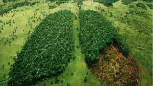

Can the Earth Be Saved ?
New science shows a clear path we must take to prevent irreversible damage to the lands, waters that sustain us all. It's not too late to choose a more sustainable future where nature and people thrive together. To reach it, we must transform the way we get our food, fish and energy right now. In recent, published research from The Nature Conservancy and 12 peer organizations, science points us to a better path for building a more sustainable, more hopeful future for the Earth.
